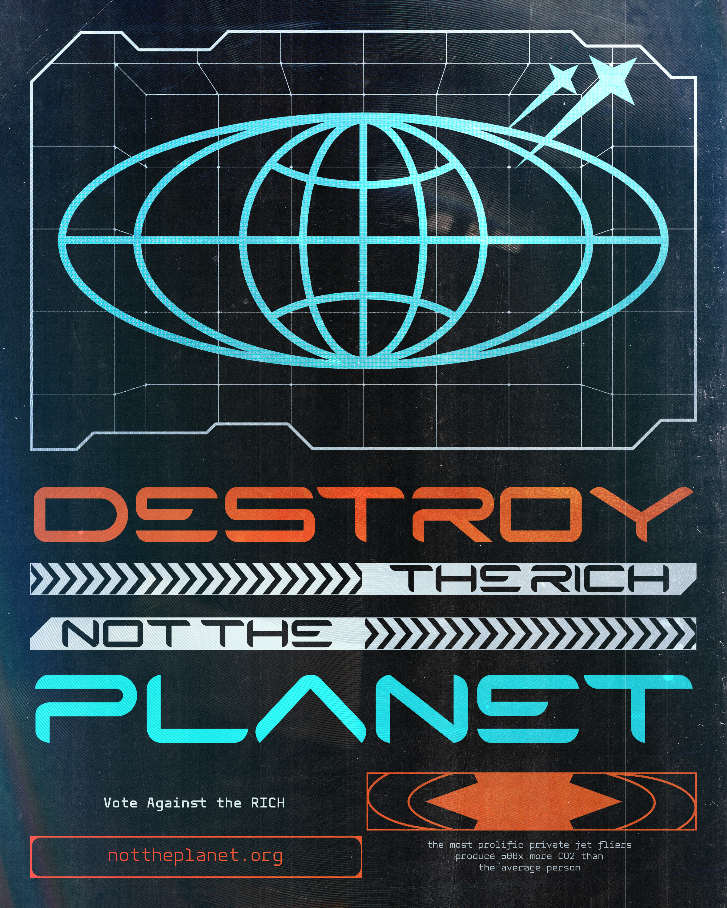
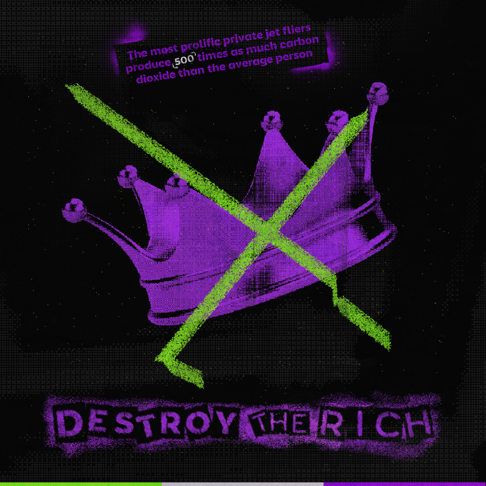
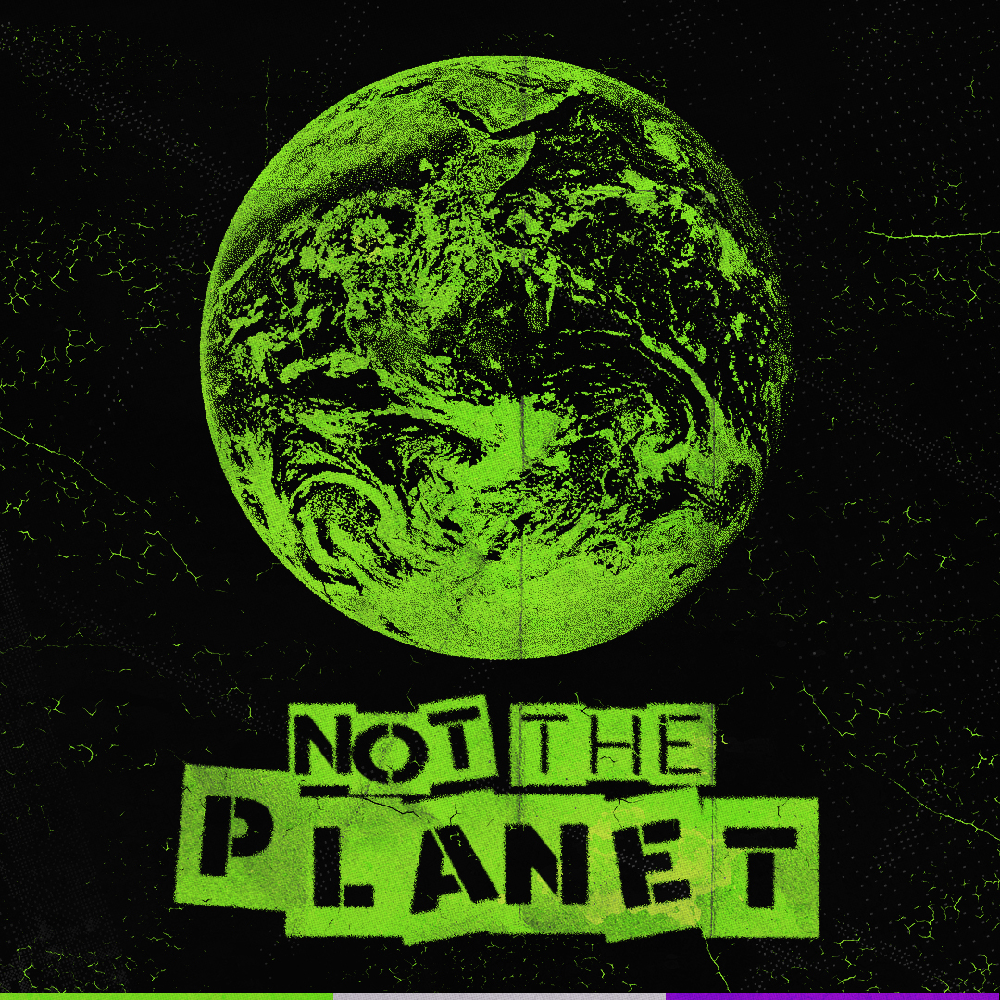
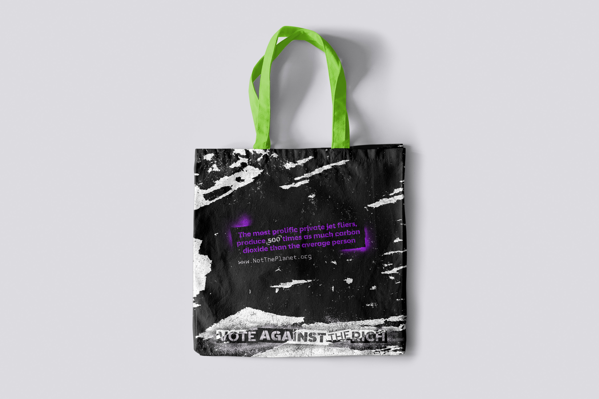

Social Issue Campaign — Design Communication IV, 2025
Climate change is framed as a collective failure. It isn't. The most prolific private jet fliers produce 500 times more carbon dioxide than the average person — while the public is handed tote bags and told to do better. This campaign was built to redirect that blame where it belongs.

The first direction was polished and photographic — cinematic imagery, editorial authority. It addressed power with the aesthetic of power. It worked visually. But it wasn't honest to the message.

The aesthetic broke before the concept did.

Stencil forms. Grain. Acid green and purple over black. The visual language of revolution — not because it was stylish, but because it was true. The campaign stopped speaking about the issue and started embodying it.


